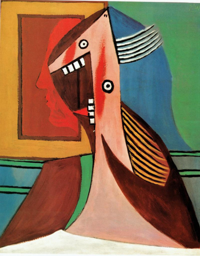
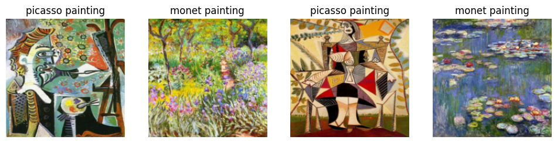
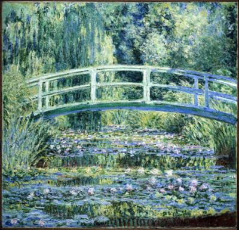

import random
from duckduckgo_search import DDGS
from time import sleep
from fastai.vision.all import *Picasso and Monet Painting Classifier
Deep Learning
fastai
In this post, let’s build an image classifier to classify paintings made by Picasso and Monet. I am currently doing Practical Deep Learning for Coders course by fastai and this blog post is to summarize my takeways.
Install packages
Let’s start by installing the required python packages.
pip install -Uqq fastai
pip install -Uqq duckduckgo_search- 1
-
Installs
fastailibrary to build and train deep learning models. It also provides utility methods to download images. - 2
-
Installs
duckduckgo_searchlibrary to search for images programatically.
Import packages
Image Search using DuckDuckGo Search
ddgs = DDGS()
search_term = 'picasso painting'
results = ddgs.images(search_term, max_results=1)The ddgs.images(search_term, max_results=1) method uses DuckDuckGo image search engine to search for images with keyword picasso painting and returns the search results. The number of results returned can be controlled by max_results
results[{'title': 'Woman s head and self portrait 1929 Picasso - United Kingdom',
'image': 'https://cdn11.bigcommerce.com/s-5qm28d53av/images/stencil/2560w/products/330/9318/Woman-s-head-and-self-portrait-1929-Picasso__04078.1586802926.jpg?c=1',
'thumbnail': 'https://tse2.mm.bing.net/th?id=OIP.ZCBc3r5pHCQkUXAesuRWtAHaJf&pid=Api',
'url': 'https://my-poster.com/Woman-s-head-and-self-portrait-1929-Picasso-/',
'height': 3282,
'width': 2560,
'source': 'Bing'}]The search results returned by the above method is a list of dictionaries. In the dictionary, the value with key as image is the url containing the image to be downloaded. Let’s use that to download the image using fastai’s download_images method.
Download images
url = results[0]['image']
path = Path('images')
path.mkdir(exist_ok=True)
download_images(path, urls=[url])- 1
-
Initialize
Pathobject to point to the directory for downloading images. - 2
-
Creates a directory pointed by
path.exist_ok=Truesupress the error if directory already exists. - 3
-
Downloads the images from the list of urls passed as
urlsand saves in the folder pointed bypath.
Let’s find the image path and display the image. ls method lists all the contents of the Path object.
path.ls()(#1) [Path('images/c72d6b91-3379-44f9-8878-92cdf7b87d3c.jpg')]im = Image.open('images/c72d6b91-3379-44f9-8878-92cdf7b87d3c.jpg')
im.to_thumb(256)- 1
- Creates thumbnail version of the image, no larger than the given size. Here it’s 256px.

Download dataset
Now let’s wrap the above logics to functions and download the dataset for our Picasso and Monet painting classifier.
def search_images(search_term: str, max_images:int=30):
print(f"Searching for '{search_term}'")
ddgs = DDGS()
results = ddgs.images(search_term, max_results=max_images)
return L(results).itemgot('image')- 1
-
extracts all the
imageattribute from the dictionaries and returns as a list
searches = 'picasso painting', 'monet painting'
path = Path('painting')
for o in searches:
dest = path/o
dest.mkdir(exist_ok=True, parents=True)
download_images(dest,
urls=search_images(f'{o} photo', max_images=100))
sleep(10)
resize_images(path/o, max_size=400, dest=path/o)- 1
- Keywords used to search for images.
- 2
- Root folder path to save the downloaded images.
- 3
- Pause for 10 seconds between each request to the image search API.
- 4
-
Resize all image files inside
path/otomax_size.
Searching for 'picasso painting photo'
Searching for 'monet painting photo'Delete corrupted images
Sometimes the downloaded images may not be in right format or got corrupted. It’s good to find and delete those files before training the model. fastai provides the utility function verify_images which does this for us.
fns = get_image_files(path)
failed = verify_images(fns)
failed.map(Path.unlink)
print(f"corrupted images: {len(failed)}")- 1
-
Returns all the image file paths in
pathdirectory. - 2
- Verifies and returns list of image file paths which are corrupted.
- 3
-
On each corrupted
pathobject, applyPath.unlinkmethod which deletes the file.
corrupted images: 3Dataloaders
Before we train the model we should do some datapreprocessing like resizing the images, creating labels for each image file etc., All these can be done through DataBlock and DataLoaders.
db = DataBlock(
blocks=(ImageBlock, CategoryBlock),
get_items=get_image_files,
splitter=RandomSplitter(valid_pct=0.2, seed=42),
get_y=parent_label,
item_tfms=[Resize(192, method='squish')]
)- 1
-
DataBlockis the class used to write the blueprint of our dataset. - 2
-
What are the input (independent variable) and output (dependent variable) data types?
ImageBlocktells the input variable in our dataset represents Image datatype andCategoryBlocktells the output variable in our dataset represents Category datatype (classification task). - 3
-
How do we extract individual items of our dataset?
get_image_filesis a function which takes root folder path as input and returns all the image files as output. - 4
-
How to split the dataset into train and validation sets?
RandomSplitteris one of the splitting strategies. It splits the dataset randomly.valid_pct=0.2tells 20% of the dataset should be part of validation set.seed=42is used for reproducibility. - 5
-
How to create label (
y) for each input sample in our dataset?parent_labelis a function which extracts the parent folder name of the file and returns as output. - 6
-
Any transformations to be applied on each item of the dataset? Usually when we train the model, we won’t be training one image at a time but a batch of images. To make this convenient, we make sure all the images are of same size.
Resizemethod is used to resize the image to specified size. Here it’s192. While resizing, the image may be cropped/squished/anything else. Here, we are asking tosquishthe image.
The above code serves as a blueprint of our dataset. But for training the model, we actually need the training and validation dataset created from the downloaded images with all the inputs and outputs in the right format as mentioned in the blueprint. DataLoaders exactly does that.
dls = db.dataloaders(path, bs=32)
dls.train.show_batch(max_n=4, nrows=1)- 1
-
Creates dataloaders from the
Datablock. Inputs arepathandbs.pathis used to point to the downloaded dataset path from which all the files are read by theget_image_filesfunction used in datablock definition.bsis the batch size which ensures during model training the model getsbs# of images at a time rather just 1. This is done to make efficient use of GPUs as well as other advantages. - 2
-
Once the dataloaders is created, we can access the training and validation set using
trainandvalidattributes respectively. Thedls.train.show_batchdisplays 4 images from the training set in a single row which is set bymax_nandnrows.

Training
Now we have the dataset ready, let’s train the model to classify Picasso and Monet images. For this project, rather than training a deep learning model from scratch let’s use a pretrained model called resnet18 and finetune it for the task (Picasso and Monet classification) at hand.
In fastai, most of the trainer has a common api which is domain_learner. Since we are going to solve a Computer Vision problem, we’ll be using vision_learner. We will be passing the dataset, pretrained deep learning model and metrics (to log) as inputs. We’ll train the model using finetune method.
learn = vision_learner(dls, resnet18, metrics=error_rate)
learn.fine_tune(5)- 1
-
dlsis the dataloaders we created in previous setps.resnet18is the Residual Network architecture with 18 layers pre-trained on Imagenet dataset.error_rateis the percentage of validation examples the model predicts wrong. - 2
-
fine_tunefinetunes the model for the new dataset at hand for given number of epochs. It also prints the training progress.
Downloading: "https://download.pytorch.org/models/resnet18-f37072fd.pth" to /root/.cache/torch/hub/checkpoints/resnet18-f37072fd.pth
100%|██████████| 44.7M/44.7M [00:00<00:00, 144MB/s] | epoch | train_loss | valid_loss | error_rate | time |
|---|---|---|---|---|
| 0 | 0.467476 | 0.218055 | 0.054795 | 00:03 |
| epoch | train_loss | valid_loss | error_rate | time |
|---|---|---|---|---|
| 0 | 0.083487 | 0.011494 | 0.000000 | 00:01 |
| 1 | 0.076097 | 0.001811 | 0.000000 | 00:01 |
| 2 | 0.058125 | 0.001642 | 0.000000 | 00:01 |
| 3 | 0.043209 | 0.002014 | 0.000000 | 00:01 |
| 4 | 0.032918 | 0.002884 | 0.000000 | 00:01 |
We can see that the validation error is around 0. It means the model does pretty good job in differentiating Picasso and Monet paintings.
Note
The original model was pretrained on a different dataset for a different problem. For our project, we need to predict which class a painting belongs to. We have two classes. So the output layer of the model should be replaced with two nodes. This is automatically taken care by fastai. The number 5 represents the number of epochs the model should be trained for. When a model sees all the training sample once, we call it an epoch.
The finetune method also employes best practices while training the model. We can see there are two sections in the training log. The second section represents the 5 epochs which we requested fastai to train for. In those 5 epochs, all the layers are trained and the metrics are logged. So then what is the first section of log which shows additional epoch? The first section shows the training log of one epoch done by fastai by freezing (no training) all the layers expect the last layer which was inserted newly for our task.
Note
An epoch is nothing but single pass of all the samples in the training dataset by the model.
Prediction
Now we have our trained model, let’s make a prediction using the predict method.
fns = get_image_files(Path('painting'))fn = random.choice(fns)
preds = learn.predict(fn)
print(preds)
Image.open(fn)- 1
- Randomly chooses an image file from the list of images.
- 2
-
predictmethod is used to make a prediction using the trained modellearn.
('monet painting', tensor(0), tensor([1.0000e+00, 1.8999e-08]))
The model predicts the output as ‘monet painting’ and it’s 100% confident about it!
The predicted output is a tuple containing three values. They are (predicted label, predicted label as index, class probabilities for each class). The index corresponding to maximum class probability is chosen as the predicted class and corresponding index is returned in the second value of the tuple. Now we have the class index, how to find the class label? learn.dls.vocab or dls.vocab can be used to see the list of labels and the order used by fastai.
learn.dls.vocab['monet painting', 'picasso painting']Here, the \(0^{th}\) index represents ‘monet painting’. Hence, the first value of the tuple returned by the predict method has ‘monet painting’ in it.
Save the model
Now we have our trained model, we can use this in other apps. To do so, first we need to save the model so we need not retrain. In fastai, the model can be saved to a file using the export method.
learn.export('model.pkl')- 1
- Export (save) the trained model in the given path.
I deployed the above model as a web app where a user can upload images of Picasso and Monet paintings and get predictions. You can find it here. In future posts, I will share how I did it.
That’s it for today. See you in another post.